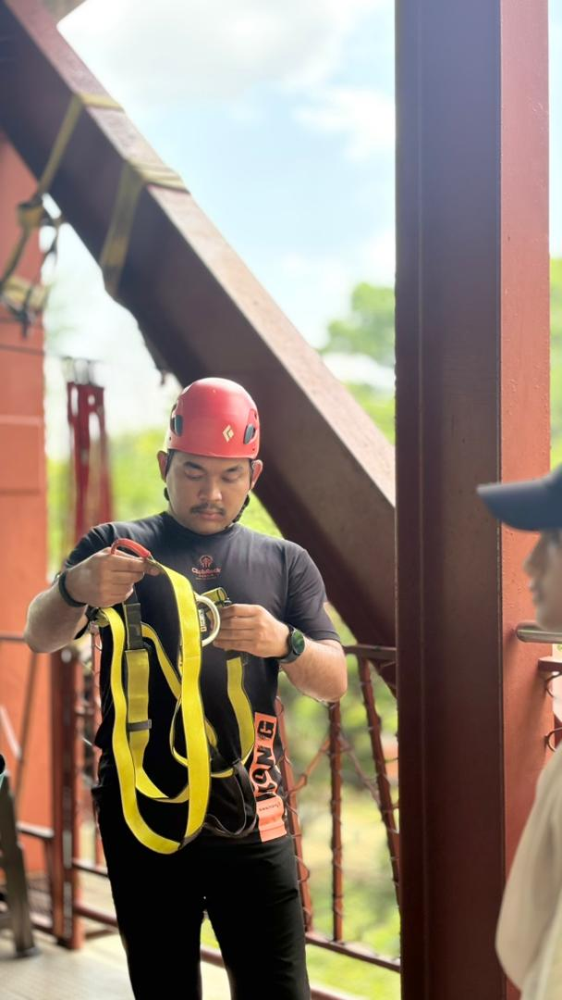
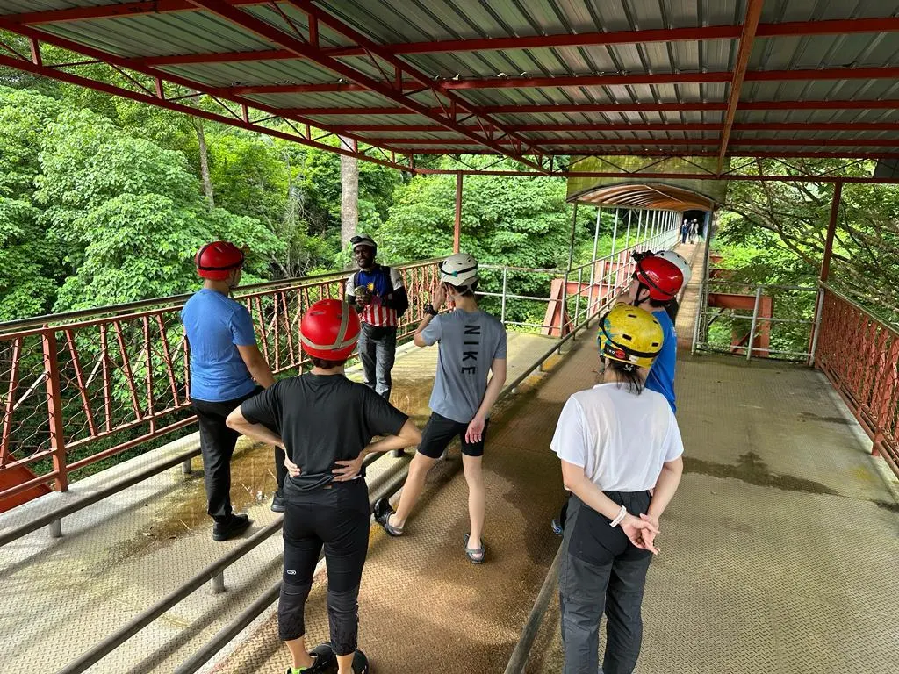
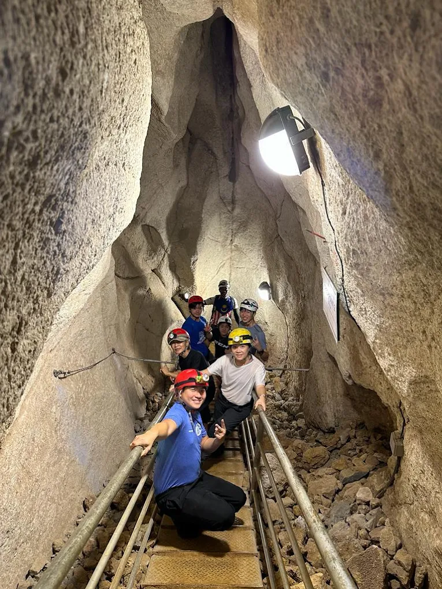

Muhammad Syafiq is a member of the Adventure Crew from Kedah. Currently, he is
working as an employee at a lodging center, Club Rock, Gua Kelam. Where, this
lodging center has just opened in mid-April. He has been working as an Adventure
crew to supervise and provide guidance to tourists who want to expedition Gua Kelam
under his care. He has had expertise as an adventure crew for 5 years.
He also has extensive experience in outdoor activities and always prioritizes
safety and learning in every expedition.
According to him, the work he does now is the result of his own interest since he was a child. Therefore, he has extended his interest by entering the world of adventure work to continue his interest.


Throughout his involvement in the world of adventure, Muhammad Syafiq has participated
in various activities including hiking, rock climbing, cabin survival and cave
exploration. He also practices a routine of exploring court tracks and always ensures
that safety aspects are checked before starting each activity.
Among the most valuable experiences were participating in flora and fauna expeditions
and exploring more than 400 caves. In addition, he also contributed to flood relief
missions and collaborated with geologists and doctors in conducting environmental
studies.
Despite facing challenges such as getting lost while hiking, the experience has
increased his level of resilience and his skills in handling challenging situations.